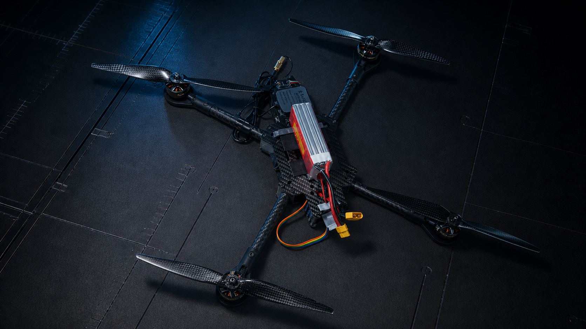

00:27
FIELD TEST / 03
Manual Flight Validation
最长连续片段，用于观察飞行状态、操控响应与低空运动。

INDEPENDENT FLIGHT CONTROL PLATFORM
面向十寸四旋翼的自研软硬件飞控平台。从 PCB、Embedded Firmware、RTOS 架构到实飞验证，形成完整的工程闭环。
01 / FLIGHT EVIDENCE
四段原始测试片段，覆盖空中飞行、低空悬停与近距离姿态观察。视频默认只加载封面与基本信息，播放时才读取内容。
FIELD TEST / 03
最长连续片段，用于观察飞行状态、操控响应与低空运动。
FIELD TEST / 02
近地悬停与平移测试。
FIELD TEST / 04
近距离记录机体姿态变化。
FIELD TEST / 01
空中飞行状态片段。
02 / CUSTOM HARDWARE
下列照片均为项目实物原图。移动鼠标可查看轻微视差，点击任意模块可进入原图 Lightbox。
CONTINUE THE REVIEW
Architecture、RTOS task topology、State Estimation、Control Chain、Safety 与 Blackbox 等技术内容将在仓库 README 中按层级展开。
Open GitHub Repository